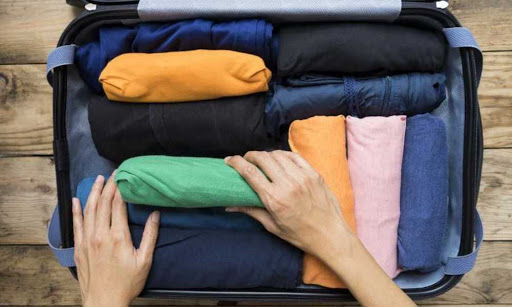

How to Pack for just 1 Bag
| Instuctions |
Visual Aids |
| 1. Decide what your going to use to put your clothes in. Personally I would recommend a backpack, but a small carry on case would work just as well. |
|
| 2. Do not pack for "what ifs"! Your just going to overpack , and I know you have a million possiblities of things that could happen but trust me. Only pack the bare essentials and absolute necessities. |
 |
| 3. Roll your clothes instead of folding. When I started rolling my clothes I almost doubled the space in my luggage. You don't have to be perfect at rolling to get the most out of this method either, even a messy roll makes your clothes much more compact. |
 |
| 4. Other countries and places you'll visit have washing machines too! If your going to spend more time away than outfits you've brought it's not the end of the world. Check to see if where your staying has washers or simply look up your nearest laundromat. |
 |